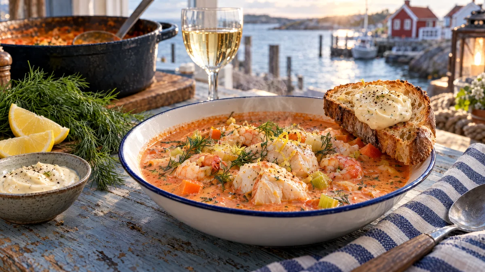

RESTFEST · RECEPTSoppa
Krämig fisksoppa med dill, citron och aioli
Ett paket fryst vit fisk, en burk krossade tomater och en morot. Fisken sjuder i en krämig, korallröd buljong med dill och citron, tills den delar sig i saftiga flak. Till soppan serveras rostat bröd med en rejäl klick vitlöksaioli. Ser ut som fiskgrytan på en hamnkrog, men är klar på en halvtimme.
- Förberedelse
- 15 min
- Tillagning
- 25 min
- Portioner
- 4
- Nivå
- Nybörjare
 Det här behöver du
Det här behöver du
JÄMFÖRT MED DIN KYL
Tryck på + vid det du behöver köpa.
Snabb aioli
Soppa
Till servering
Gör så här
- Rör ihop majonnäs, vitlök och citronsaft till aiolin och ställ den kallt.
- Hacka löken. Skala moroten och skär den i små tärningar. Skölj purjolöken och skiva den tunt. Hacka vitlöken.
- Fräs grönsakerna i olivoljan i en stor kastrull på medelvärme i 5 minuter, utan att de får färg. Rör ner tomatpurén och fräs 1 minut till.
- Häll i krossade tomater, vatten, buljongtärning och vin. Koka upp och låt sjuda under lock i 10 minuter, tills moroten är mjuk.
- Skär fisken i bitar, ca 3 cm. Rör ner grädden i soppan och låt den sjuda upp. Lägg i fisken och låt sjuda på låg värme i 4–5 minuter, tills fisken är vit hela vägen in. Rör försiktigt så att bitarna håller ihop, och låt inte soppan koka, då blir fisken torr.
- Ta kastrullen från värmen och rör ner citronskal, citronsaft, dill och räkorna. Räkorna värms av soppan. Smaka av med salt och vitpeppar.
- Ringla olivolja över brödet och rosta det i en torr stekpanna, 1–2 minuter per sida, tills det är gyllene och krispigt.
Dekoration och servering
- Lägg fiskbitarna i djupa tallrikar först och skeda soppan runt, så att de stora flaken syns på ytan.
- Bred en rejäl klick aioli på det rostade brödet och lägg det på tallrikskanten.
- Toppa med dillkvistar, lite citronskal och några räkor.
- Servera med citronklyftor.
- Har du saffran kvar sedan lussebaket, lägg i ½ g tillsammans med tomaterna.
Mått och ugnstemperaturer
Måtten är svenska (dl, msk, tsk, krm). Ugnstemperaturerna gäller vanlig ugn med över- och undervärme; med varmluft, sänk med 20 grader.